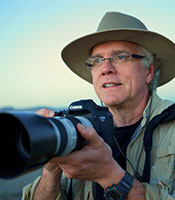
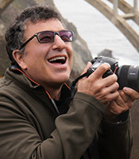
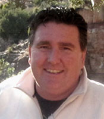
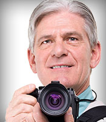
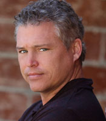

Speaker Bios
We've been in the photo industry since 1967. And although cameras and technology have changed drastically, the components to make a great photograph pretty much remain the same. Our instructors are experienced Mike’s Camera crew members and excellent photographers and each of them is qualified as a Certified Photographic Consultant by the Photographic Marketing Association. We are also fortunate to be able to host acclaimed professional photographers and software instructors; leaders in their fields to lead certain of our Learning Center programs.
Keynote Speakers

Award-winning photographer Rick Sammon loves his day job. A tireless, prolific and inspirational image-maker, Rick, called by some “The Godfather of Photography,” is one of the most active photographers on the planet – dividing his time between creating images, leading photo workshops, and making personal appearances. Rick’s enthusiasm for digital imaging is contagious. He is a man on a mission – a mission to make digital photography fun, creative, exciting and rewarding for others.
Rick started his professional photography career as an underwater photographer, producing six underwater books and leading scuba diving expeditions to the seven seas. He easily transitioned into travel, landscape, wildlife, cultural and nature photography. Rick’s images, from his travels to more than 100 countries, have been published in numerous newspapers and magazines, and have been featured in his 36 books, including the popular Rick Sammon’s Exploring the Light, and 11 apps, including Rick Sammon’s 24/7 Photo Buffet.
In recognition of his talent and influence, Rick has been named a Canon Explorer of Light. He is also a Westcott Top Pro Elite, recognized for his skill in portraiture and lighting. Rick is also an instructor on Kelby Training, where he shares his knowledge about light and composition. He was also named by Squarespace as one of the world's best photographers.

Andy Katz’s love of photography takes him around the globe. From the deserts
of Namibia to the disappearing Jewish World of Eastern Europe to the rolling
hills of the California wine country, his subjects range as broadly as his travels
and adventures. Each journey for Katz is a new exploration of images. Katz
discovered his passion for photography at a young age and is now a Sony
Artisan of Imagery.. Andy’s imagery has been featured on the covers of Doobie Brothers and Dan
Fogelberg Albums. Over 6 million albums sold. Katz’s work is also featured in
museums and galleries worldwide including his gallery in Healdsburg, California.
Guidebook author and travel TV host Rick Steves is America's most respected authority on European travel. Rick took his first trip to Europe in 1969, visiting piano factories with his father, a piano importer. As an 18-year-old, Rick began traveling on his own, funding his trips by teaching piano lessons. In 1976, he started his business, Europe Through the Back Door, which has grown from a one-man operation to a company with a staff of 80 full-time, well-travelled employees at his headquarters in Washington state. There he produces more than 50 guidebooks on European travel, America's most popular travel series on public television, a weekly hour-long national public radio show, a weekly syndicated column, and free travel information available through his travel center and website. Rick Steves' Europe Through the Back Door also runs a successful European tour program.
 William Innes became fascinated with photography at an early age after being intrigued
by the buttons and dials on his father’s camera. (William still has that camera – an East
German Praktica MLT-5B). After a long career in the aerospace industry – William leaped
into the wedding photography world in 2006 and has never looked back. He believes to
be a great wedding photographer you need to be well versed in all kinds of
photography, including portrait, landscape, action and product techniques. Besides
wedding photography – William loves traveling the world to experience the food, culture
and sights. To-date William has visited 42 countries.
William is a member of the Panasonic Lumix Luminary team – promoting mirrorless
cameras across the USA. He works and lives in Santa Clarita, California with his wife and
little dog. He is a member of PPA and WPPI.
William Innes became fascinated with photography at an early age after being intrigued
by the buttons and dials on his father’s camera. (William still has that camera – an East
German Praktica MLT-5B). After a long career in the aerospace industry – William leaped
into the wedding photography world in 2006 and has never looked back. He believes to
be a great wedding photographer you need to be well versed in all kinds of
photography, including portrait, landscape, action and product techniques. Besides
wedding photography – William loves traveling the world to experience the food, culture
and sights. To-date William has visited 42 countries.
William is a member of the Panasonic Lumix Luminary team – promoting mirrorless
cameras across the USA. He works and lives in Santa Clarita, California with his wife and
little dog. He is a member of PPA and WPPI.
Ken has had nationwide gallery showings of his portrait and landscape photography and teaches enthusiasts how to take better photos at workshops across the country. He has traveled extensively throughout the United States and the result is a consistent output of breathtaking photographs that continually challenge the boundaries of the genre. Ken is the Field Services Manager for Tamron, responsible for Tamron’s popular consumer workshop series.
Through a desire to capture majestic landscapes and the adventure of mountaineering, Rob became interested in photography. As the child of military photographer parents, Rob naturally took to photography eventually earning a degree from the Art Institute of Colorado. Today, Rob is a freelance photographer and a National Account Manager for Lowepro and Joby.

John Bell is one of the District Sales Representatives with Canon. Over the past 15 years John has worked in Photography, Printing, Network Engineering & Design. He has a passion for Sports Photography, Sailing Photography, Photo Journalism, plus Nature & Landscape Photography.
A 17 year veteran of the photo industry, Sony Photo Specialist Marc Morris started in 1997 as a custom and machine print technician for a local photofinishing lab. A professed tech nerd and Colorado native, he has photographed a little of everything from concerts at the Aggie in Fort Collins to the Winter X Games in Aspen, to a combined 15 years of wedding, portrait and product work. A road trip fanatic with two teenagers, he and his kiddos tend to spend their summers exploring the deserts of the Four Corners area and Moab, Utah. You can find him and some of his more informal work on Instagram at instagram.com/setaside or follow on Twitter at twitter.com/setaside2. He is always welcoming new friends and inspirations.

Olympus Trailblazer Frank Smith is a self-taught photographer whose love for the craft goes back to a very early age. Decades later, Frank’s passion for photography has yet to fade as his skills continue to evolve. A native Northeasterner, Frank often focuses his lens on the local scenery of the Pocono Mountains and the historical sites of Bethlehem, Pennsylvania. His raw travel and philanthropic photojournalism covers global themes, shedding light on cultural issues such as sex trafficking in Mumbai and regional corruption in areas including South Sudan and Haiti.
Frank is dedicated to Olympus interchangeable lens cameras, using the OM-D EM-1 for work and reaching for the OM-D EM-5 for road travel and family events. Frank’s work has been featured in print, in exhibits, and in philanthropic venues including Glow Artworks, a North American–based consortium of 30 photographers that offers healing art that encourages the well-being of patients, visitors and workers in healthcare centers and other spaces.

Shawn Weishaar is one of the Technical sales Representatives with Canon. He’s worked with the company for the past 10 years and has a background in landscape and sports photography for the past 25 years. Shaw also has a strong passion for creating panoramic images and working with models. His technical expertise includes lighting, Canon DPP software, Canon Pro printing and Lightroom.
Campbell has worked for Nikon for 8 years with 4 of those years teaching thousands of people how to get the most out of their Nikon cameras. He has shot college and professional athletic events, and traveled through out the Americas photographing from Yellowstone to Sao Paulo. He currently lives in Dallas with his family and 5 children.
Spring 2014 Featured Vendors